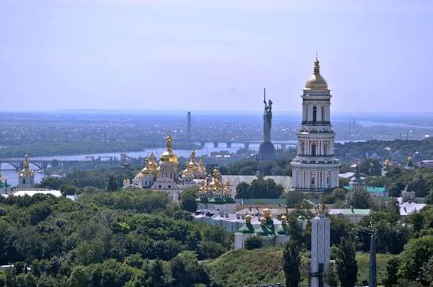
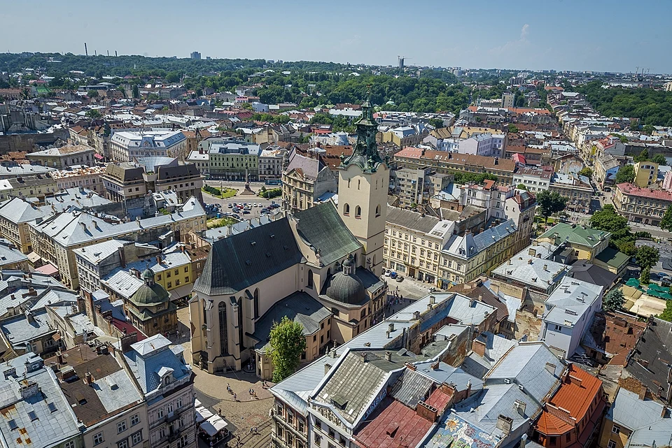
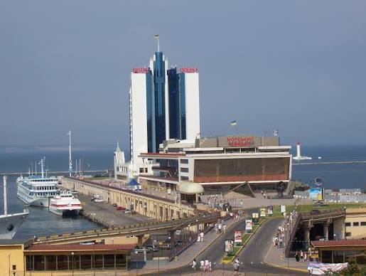

Kyiv

Kyiv, the capital of Ukraine, is located in the north-central part of the country. It is the largest city in Ukraine and serves as the political, economic, and cultural center of the nation. Kyiv has a rich history that dates back over 1,400 years and is known for its stunning architecture, including the iconic Saint Sophia Cathedral and the Kyiv Pechersk Lavra. The city is also a hub for education and research, with numerous universities and institutions. Kyiv's vibrant nightlife, diverse culinary scene, and numerous parks and green spaces make it a popular destination for both locals and tourists.
Lviv

Lviv is a city in western Ukraine, on the edge of the Carpathian Mountains. It is the largest city in western Ukraine and the seventh-largest city in the country. Lviv is known for its rich history, cultural heritage, and vibrant arts scene. The city has a well-preserved historical center, which is a UNESCO World Heritage Site, and is home to numerous museums, theaters, and galleries. Lviv is also famous for its coffee culture, with many cafes and coffeehouses scattered throughout the city.
Odesa

Odesa is a port city on the Black Sea in southern Ukraine. It is the third-largest city in the country and serves as an important cultural and economic center. Odesa is known for its beautiful beaches, historic architecture, and vibrant nightlife. The city has a rich history, with influences from various cultures, including Russian, Turkish, and Jewish. Odesa is also famous for its annual film festival and its unique humor, which is reflected in the city's many theaters and comedy clubs.